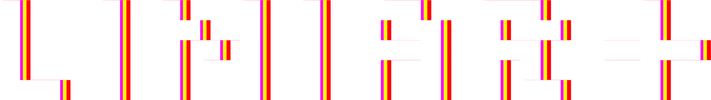

[ GUIA DE CRIAÇÃO DE PERITO ]Em LIMIAR+, seu Perito começa com 5 pontos para dividir livremente entre os 5 atributos abaixo. Cada atributo começa em 0 e pode receber no máximo 5 pontos nesta etapa. Clique nos quadrados (■ / □) de cada nódulo para distribuir seus pontos e clique em um atributo para ler como ele funciona.
O livro estabelece uma regra fundamental para * Psicometria: você deve escolher entre Inteligência ou Sapiência para receber o seu valor cheio de Psicometria (0). O sub-atributo que você não escolher ficará automaticamente com o valor base -3.
Escolha uma das 32 profissões do livro. Sua profissão define seus bônus de atributo e o seu Equipamento Inicial. Clique em qualquer ofício abaixo para atualizar sua ficha na hora.
Para definir seus pontos vitais iniciais, você rola 2d6 (dois dados de 6 lados) para a * Vida e 2d6 para a * Sanidade. Clique nos botões de rolagem abaixo (ou digite o valor rolado na mesa).
Some seu Vigor Total ao resultado de 2d6. Se sua Vida chegar a 0 durante o jogo, seu Perito morre.
Some sua Razão Total ao resultado de 2d6 . Ao cair para 0, faça um Teste de Razão (falha = Insano, perdendo o dobro).
Para concluir seu Perito, defina seu Nome e preencha os dois campos finais exigidos pelo livro: * Uma frase de história (quem você era antes de tudo começar) e * Primeiro contato com o Indizível (como você descobriu que o Véu existe). Em seguida, clique em Exportar Ficha em PDF Editável.